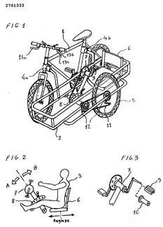
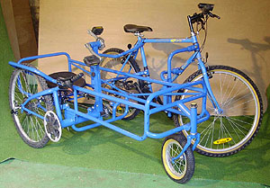
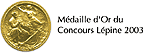

premier prototype
CYCLO-SIDE est réalisé sur la base d'un VTT auquel est attaché une structure latérale possédant sa propre roue motrice pour constituer un ensemble du genre SIDE-CAR (comme c'est le cas pour une moto).
La particularité réside dans le fait que la partie latérale appelée SIDE, peut recevoir un passager actif qui est installé conventionnellement pour un SIDE, en position assise. Ce passager agit sur la roue latérale motrice soit par la force de ses jambes soit par la force de ses bras car le pédalier, et c'est un point majeur du brevet, peut occuper , à loisir deux positions distinctes permettant respectivement l'action par les jambes ou par les bras.
Tout l'intérêt de CYCLO-SIDE réside dans sa contribution au niveau médical :
Rééducation de plein air pour des convalescents qui doivent exerciser leurs jambes ou leurs bras. Plusieurs kinésithérapeuthes ont confirmé que CYCLO-SIDE constituait une alternative très interessante et plus motivante aux conventionnels vélos d'appartement qui équipent leur salon médical.
Au niveau social et intégration :
En permettant à des handicapés moteurs ou mal voyants d'être associés à des personnes valides pour mieux les intégrer à des loisirs collectifs. Sportifs et loisirs de plein air enfin car le pilotage du CYCLOSIDE procure des sensations particulièrement enthousiasmantes et de surcoit ouvre à des exhibitions très spectaculaires.
De plus, dans l'hypothèse d'une traction assistée, le side peut accueillir soit des batteries pour une propulsion éléctrique soit des bouteilles d'air ( 3 bouteilles de diametre 220 mm et de 2 m de long, placées sous le side, pour une propulsion à air comprimé).
